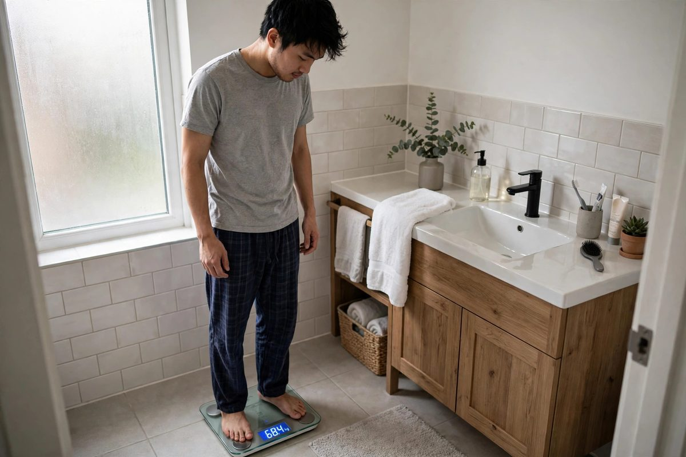

Breaking a Weight Loss Plateau
Why weight loss stalls, how to tell a real plateau from normal fluctuation, and the steps that restart progress.
A weight loss plateau is a period of three or more weeks with no change on the scales, despite sticking to the plan. It is frustrating, but it is also normal, and it almost always has a fixable cause. This guide explains why plateaus happen, how to tell a real stall from everyday fluctuation, and the practical steps that get progress moving again.
Why plateaus happen
The main reason is that a lighter body burns fewer calories. A person who loses 10 kg may burn 150 to 200 fewer calories a day than before, which shrinks the deficit that was producing loss. The second reason is drift: portions creep up, snacks go uncounted, and exercise slips, often without noticing. The third is water: a hard workout, a salty meal, or hormonal changes can add a kilogram of water for days, hiding fat loss on the scales. All three are normal, and all three are fixable.
Is it a real plateau?
Before changing anything, check whether it is a real stall. Weigh yourself weekly, at the same time and in the same conditions, and look at the trend over three weeks. A single unchanged reading is not a plateau; daily weight can swing by a kilogram with water and food. Also check other measures: waist measurement, how clothes fit, and strength in the gym. If your waist is shrinking while the scales are flat, you may be losing fat and gaining muscle at the same time, which is progress the scales cannot see.
Recalculate your numbers
If the stall is real, the first step is to recalculate your calorie needs at your new weight. Enter your current weight, age and activity into the calculator and compare the result with your current target: you will usually find your maintenance level has fallen and your deficit has shrunk. Lower your target by 100 to 200 calories, or add activity instead. A small change is enough; a drastic cut usually backfires, because it increases hunger and costs muscle.
Change the activity side
Adding movement is often easier than cutting more food. Add a daily 30-minute walk, which burns roughly 150 to 200 calories, or add two strength sessions a week, which protect muscle and raise your metabolism over time. Increase daily steps by 2,000 to 3,000, take the stairs, or stand more during the day. These small changes add up to a meaningful extra deficit without making meals smaller, and they improve fitness at the same time.
When to take a break
If you have been dieting for months and the plateau will not shift, a planned break can help. Eating at maintenance for two to four weeks reduces hunger hormones, restores energy, and often makes the next phase of loss easier. This is not giving up; it is a deliberate part of a long plan, used by athletes and dietitians alike. After the break, return to a modest deficit with recalculated numbers. Sustainable weight loss is measured in months, not weeks, and a short pause is a small price for a plan you can actually finish.
A plateau, worked through
Take a person who started at 90 kg with a target of 2,000 calories and lost steadily to 82 kg, then stalled for four weeks. Their TDEE at 90 kg was about 2,500 calories, so the deficit was 500. At 82 kg, their TDEE is about 2,300, so the same 2,000-calorie target is now only a 300-calorie deficit, and the loss has slowed to a crawl. The fix is to recalculate: the new target for a 500-calorie deficit is 1,800, or to add a daily 30-minute walk worth about 150 calories and lower the target to 1,900. Either change restores the deficit, and the scales start moving again within two weeks. The plateau was not a failure; it was the maths catching up, and the fix was a recalculation, not a punishment.
Frequently Asked Questions
How long is a real weight loss plateau?
Three or more weeks with no change, measured weekly under the same conditions. A single flat reading is normal fluctuation.
Why did my weight loss stop?
Usually because a lighter body burns less, so the deficit shrank, or because portions and activity drifted. Recalculate your needs at your new weight.
Should I eat even less to break a plateau?
Only a little: 100 to 200 calories less, or add a daily walk. A drastic cut usually backfires with hunger and muscle loss.